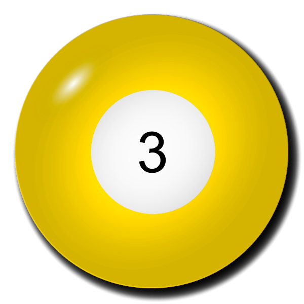
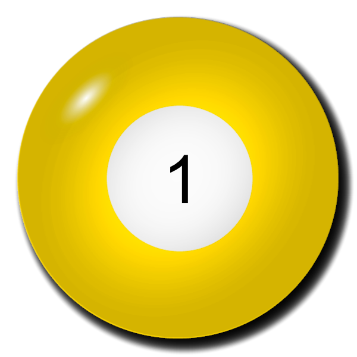
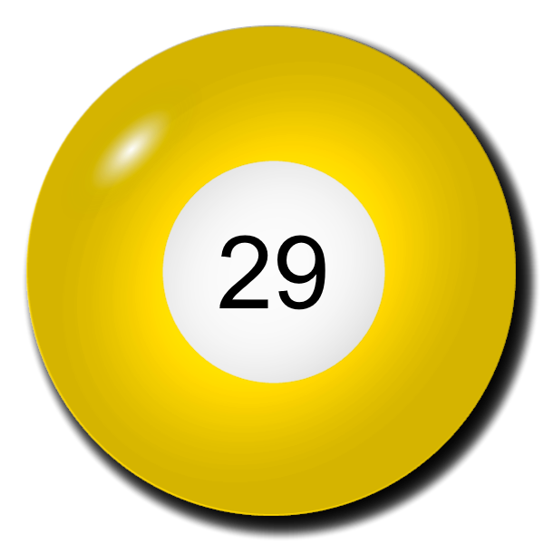

Korábbi sorsolások
Leggyakoribb számok
Leghasonlóbb számsorok
Leghosszabb sorozatok számsorban
Legkisebb összegű számsorok
Grafikonok
Érdekes történetek
Leggyakoribb számok
#1 218 db
#2 209 db
#3 208 db